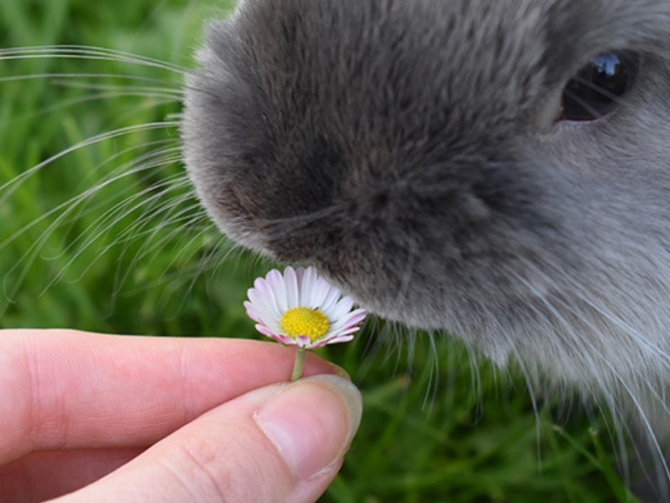

Králíci jsou malí savci z čeledi zajícovitých, patřící do řádu zajícovců. Rodovým názvem „králík“ jsou označováni zástupci celkem sedmi rodů. v Česku se tento název obvykle vztahuje ke králíku divokému nebo jeho domestikované formě králíka domácího. Králíci mohou být chováni na maso a pro kožešinu. Nenáročnost chovu umožňuje, aby byl králík chován jako domácí mazlíček.
Mláďata jsou po narození zcela závislá na matce. Oči se jim otevírají přibližně 10. den a kolem 2. týdne věku se začínají pohybovat mimo hnízdo. Od třetího týdne postupně ochutnávají pevnou potravu, i když nadále sají mateřské mléko. K úplnému odstavu dochází obvykle mezi 4.–6. týdnem života. Pohlavní dospělosti dosahují králíci poměrně brzy. U malých plemen to bývá již ve věku 3–4 měsíců, u středních a velkých plemen kolem 5–8 měsíců. Samci zpravidla dospívají o něco později než samice.
Králíci jsou sociální tvorové a rádi tráví čas s jinými králíky nebo se svými majiteli. Mají velmi rychlý metabolismus a potřebují pravidelný přísun kvalitního jídla a vody. Králíci jsou aktivní v noci i ve dne a milují hrát si a prozkoumávat své okolí. Mohou se naučit různým trikům a jsou vynikajícími společníky. Také pravidelný přísun kvalitního jídla a čisté vody. Měli by být krmeni kvalitním senem, čerstvou zeleninou a ovocem, stejně jako kvalitním králičím krmivem.
